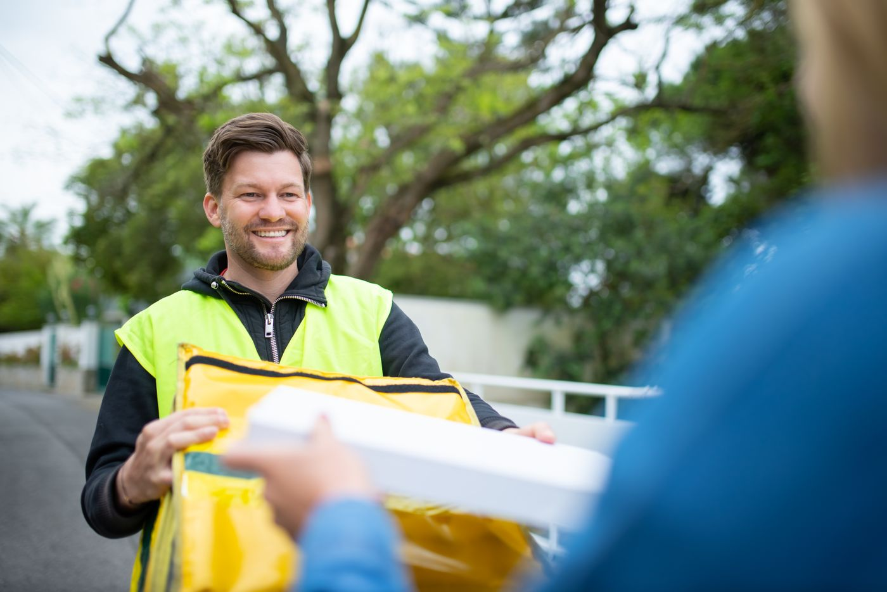
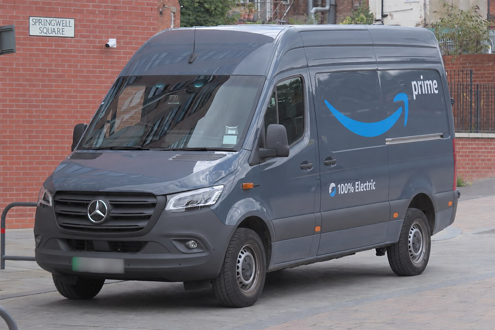

Ready for the route
Driver and vehicle allocation, route preparation and careful parcel loading before departure.
OFFICIAL AMAZON DELIVERY SERVICE PARTNER
We’re a UK final-mile delivery carrier based in Aylesford, Kent. Our team delivers Amazon parcels from the delivery station to homes and businesses.
Hiring self-employed drivers. 2026 van at no cost. Insurance and delivery fuel covered. Paid training.
Independently owned and operated by BESA Logistics Ltd.

WHAT WE DO / ABOUT US
BESA is the delivery team between the station and the doorstep. We organise drivers and vans, run multi-stop routes and deliver parcels to Amazon customers.
Our operational base is Aylesford, Kent. We manage our own delivery business and team as an official Amazon Delivery Service Partner.
Contact the BESA teamDriver and vehicle allocation, route preparation and careful parcel loading before departure.
Delivery instructions, communication with operations and a clear way to flag delays or problems.
Respectful handovers, careful parcel handling and the required delivery confirmation at each stop.
Customer obsessed. Data driven. People focused. We use delivery performance, vehicle information and driver feedback to guide coaching, maintenance and improvements.
OUR APPROACH / SAFETY & STANDARDS
The standards we expect on every route: a roadworthy van, a prepared driver and decisions that protect people on the road and at the doorstep.
Check tyres, lights, mirrors and the load before departure. Flag vehicle defects to operations before taking the van onto the road.
Wear a seat belt, keep to speed limits and consider pedestrians and other road users. Use delivery apps only when safely parked.
Fatigue, illness or an unsafe delivery stop needs attention. Contact operations, raise the concern and put safety first.
Use reported incidents, vehicle issues and driver feedback to identify where coaching, maintenance or a change in approach is needed.
CAREERS AT BESA / SELF-EMPLOYED OPPORTUNITIES
£140.40per day, plus VAT where applicable
Self-employed delivery driver opportunities based in Aylesford, Kent. We’ll confirm availability and full terms with you. BESA is an equal opportunity employer and welcomes applicants from all backgrounds.

OUR TEAM
Craig, Jamie and Chloe on working with BESA.
“What I’ve liked most about working with BESA is the support. If you have a problem, there is always someone available to help, and good work is recognised.”
“BESA gives you clear expectations and the tools you need to do the job properly. The team is organised, professional and always looking at how things can be improved.”
“I’ve worked with different delivery companies, and BESA has been one of the best for communication and looking after its drivers. You feel like part of the team.”
GET IN TOUCH
Looking for driving work? Use our driver interest form. For business or general enquiries, send the team a message.
Our verified contact details are shown alongside.